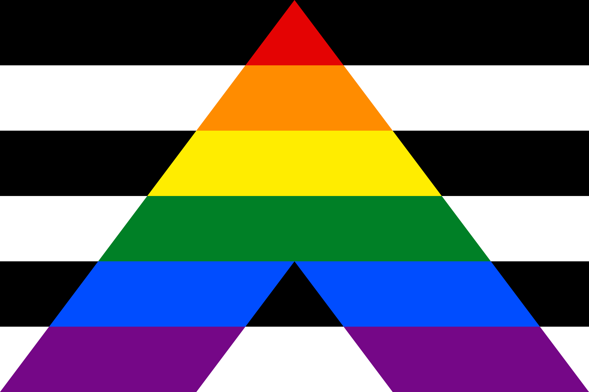

Nice to meet you!
I am Tobias Stål, call me Toby, geophysicist specialising in Antarctic research. My background is in geology and geomorphology, previously working in the Arctic and Europe. I also have a professional background and education in art and electrical engineering. I am here to learn, share knowledge and contribute to the community.
I get excited about fieldwork logistics. My work has taken me to the Arctic, Antarctic, and across Europe, Africa, and the Middle East; projects and places where limited resources force you to prioritise and solve problems with whatever you have. Turns out this constraint-driven approach works remarkably well. It also makes interdisciplinary and international collaboration not just possible, but essential. When depending on other people’s skills and experience, you cannot afford to be judgmental.
Fieldwork and Instrumenation
I work in complex environments, build collaborations across disciplines and continents, and love learning while exploring this planet. I enjoy the process and don’t take myself too seriously; but I take my science extremely seriously.
Modelling and Analysis
My own research is focused on merging data from geology, geophysics, and statistical computer models. By integrating such diverse disciplines, I aim to comprehensively understand the continent's structure, particularly within the ice-covered interior. Through models, we can illuminate the intricate interactions between the massive ice sheet and the underlying subglacial geology and better prepare for the Antarctic response to global warming and rising sea levels. I like to develop new ways to run models; finding new angles to study fenomena. In addition to my work on Antarctica, I study geothermal heat, explore innovative applications of geophysics and instrumentation and learn from the history of polar science.
Impact and Society
I am not optimistic about the future; however, history is not linear, and there is still space to shape a better world. I have tried to do my part by volunteering with the Red Cross in support of refugees, with the Danish Sea Rescue, and by teaching in Ghana. These days, most of my energy for this goes into parenting.
Positive Change

At the very least, humanity can work to avert the worst catastrophes. We need to reclaim and direct technology for the good of the Earth, through genuine collaboration and with no place for prejudice.
Online Profiles
- Github Tobias Stål – Github repo
- Bluesky @tobiasstl.bsky.social
- UTAS University of Tasmania profile
- Google Scholar Google Scholar – Tobias Stål
- Orcid ORCID – Tobias Stål
-
Contact
Email – Tobias Stål (he/him)
- 
Tobias Stål
Peer Reviewed Publications
- 2025 M Al-Aghbary, MO Awaleh, M Jalludin, M Sobh, C Gerhards, T Staal — Improving Geothermal Heat Flow Predictions and Uncertainty Quantification using Clustering-based Quantile Regression Forests. Authorea Preprints. doi:10.22541/au.175373261.14525669/v1 (In review Geophysical Journal International)
- 2025 M Lösing, W Colgan, T Stål, J Ebbing, AG Busck, T Zhang, H Seroussi, F McCormack, D Fahrner, L Stearns et al. — Community heat flow recommendations: Suitable basal boundary conditions for Greenland and Antarctica in ISMIP7. Preprint. doi:10.31223/X5XJ1P (Accepted for publication in The GEUS Bulletin)
- 2025 M Lösing, ARA Aitken, J Ebbing, JA Halpin, L Li, M Moorkamp, AM Reading, T Staal — Linking Tectonics and Crustal Thermal Properties in Southwestern Australia and East Antarctica Through Coupled Gravity and Magnetic Analysis. Journal of Geophysical Research: Solid Earth. doi:10.1029/2024JB030770
- 2025 NJ Abram, A Purich, MH England, FS McCormack, JM Strugnell, DM Bergstrom, TR Vance, T Stål, B Wienecke, P Heil et al. — Emerging evidence of abrupt changes in the Antarctic environment. Nature, 644(8077), pp. 621–633. doi:10.1038/s41586-025-09349-5
- 2025 MC Manassero, K Selway, T Staal, M Scheiter, FS McCormack, M Lösing, JA Halpin, B Kulessa, AM Reading — Bed topography and subglacial conditions of Denman Glacier, East Antarctica: Insights from magnetotelluric data and interdisciplinary studies. Authorea Preprints. doi:10.22541/au.175883281.14619781/v1 (Submitted)
- 2024 T Stål, JA Halpin, JW Goodge, AM Reading — Geology matters for Antarctic geothermal heat. Geophysical Research Letters, 51(13), e2024GL110098. doi:10.1029/2024GL110098
- 2023 S Fuchs, F Neumann, B Norden, G Beardsmore, P Chiozzi, W Colgan, AP Dominguez, MRA Duque, OM Ojeda Espinoza, F Forster et al. — The Global Heat Flow Database: Update 2023. GFZ Data Services. doi:10.5880/fidgeo.2023.023
- 2022 FS McCormack, JL Roberts, CF Dow, T Stål, JA Halpin, AM Reading, MJ Siegert — Fine-scale geothermal heat flow in Antarctica can increase simulated subglacial melt estimates. Geophysical Research Letters, 49(15), e2022GL098539. doi:10.1029/2022GL098539
- 2022 T Stål, AM Reading, S Fuchs, JA Halpin, M Lösing, RJ Turner — Properties and biases of the global heat flow compilation. Frontiers in Earth Science, 10, 963525. doi:10.3389/feart.2022.963525
- 2022 AM Reading, T Stål, JA Halpin, M Lösing, J Ebbing, W Shen, FS McCormack, CS Siddoway, D Hasterok — Antarctic geothermal heat flow and its implications for tectonics and ice sheets. Nature Reviews Earth & Environment, 3(12), pp. 814–831. doi:10.1038/s43017-022-00348-y
- 2021 T Stål, AM Reading, JA Halpin, JM Whittaker — Antarctic geothermal heat flow model: Aq1. Geochemistry, Geophysics, Geosystems, 22(2), e2020GC009428. doi:10.1029/2020GC009428
- 2021 G Sanchez, JA Halpin, M Gard, D Hasterok, T Staal, T Raimondo, S Peters, A Burton-Johnson — PetroChron Antarctica: A geological database for interdisciplinary use. Geochemistry, Geophysics, Geosystems, 22(12), e2021GC010154. doi:10.1029/2021GC010154
- 2020 T Stål, AM Reading, JA Halpin, SJ Phipps, JM Whittaker — The Antarctic crust and upper mantle: A flexible 3D model and software framework for interdisciplinary research. Frontiers in Earth Science, 8, 577502. doi:10.3389/feart.2020.577502
- 2020 PE Morse, AM Reading, T Stål — Exploratory volumetric deep Earth visualization by 2.5 D interactive compositing. IEEE Transactions on Visualization and Computer Graphics, 28(7), pp. 2641–2653. doi:10.1109/TVCG.2020.3037226
- 2020 T Stål, AM Reading — A grid for multidimensional and multivariate spatial representation and data processing. Journal of Open Research Software, 8(1), pp. 1–7. doi:10.5334/jors.287
- 2019 T Stål, AM Reading, JA Halpin, JM Whittaker — A multivariate approach for mapping lithospheric domain boundaries in East Antarctica. Geophysical Research Letters, 46(17–18), pp. 10404–10416. doi:10.1029/2019GL083453
- 2019 PE Morse, AM Reading, T Stål — Well-posed geoscientific visualization through interactive color mapping. Frontiers in Earth Science, 7, 274. doi:10.3389/feart.2019.00274
Reports, Outreach, Code, Datasets
- 2025 AM Reading, T Stål, I Kelly — Ice Sheets and Interactions, Dronning Maud Land and Coats Land [Data set]. International Federation of Digital Seismograph Networks. doi:10.7914/j9cq-xd60
- 2025 T Stål, AM Reading, S Kupis, J Newlands — Casey-Wilkins Adaptable Array [Data set]. International Federation of Digital Seismograph Networks. doi:10.7914/SN/Z9_2021
- 2024 T Stål, FS McCormack, AM Reading, N Askey-Doran, JA Halpin, M Lösing — Geothermal Heat Shapes the Antarctic Ice Sheet From Below. Frontiers for Young Minds. doi:10.3389/frym.2023.1178537
- 2023 S Fuchs, F Neumann, B Norden, G Beardsmore, P Chiozzi, W Colgan, AP Dominguez, MRA Duque, OM Ojeda Espinoza, F Forster, [..], T Stål et al. — The Global Heat Flow Database: Update 2023. GFZ Data Services. doi:10.5880/fidgeo.2023.023
- 2022 T Stål — Fast Calculation of Ripley's K and L Functions on a Sphere. Zenodo. doi:10.5281/zenodo.6865005
Academic Positions
- 2022 – Present Research Associate in Computational Physics (Geophysics), ACEAS, University of Tasmania
- 2021 – 2022 Research Fellow in Antarctic Seismology, University of Tasmania
- 2020 – 2021 Research Assistant, University of Tasmania
- 2016 – 2021 Casual role as tutoring, demonstrating, and research assistant, University of Tasmania
Education
- 2021 PhD, Geophysics, Geology, and Computational Methods, University of Tasmania, Australia. Thesis titled The Antarctic Lithosphere Revealed by Multivariate Analysis. Supervised by AM Reading, JA Halpin, and JM Whittaker. Coursework in statistics and computational geophysics.
- 2016 MSc, Geophysics, University of Copenhagen, Denmark. Thesis titled High-Resolution S- and P-Wave Seismic Mapping of Near-Surface Chalk Deposits. Supervised by L Nielsen. Coursework in, e.g., geophysics, stochastic modelling, and sedimentary basins.
- 2011 BSc, Geology, University of Copenhagen, Denmark. Including studies at UNIS, Svalbard. Thesis titled Processes and Development of the Faroe North Slide Complex. Supervised by GK Pedersen and T Nielsen. Coursework in, e.g., geology, palaeontology, geomorphology, Quaternary geology, and Arctic marine geology.
- 1998 AD, Sound Engineering, Piteå Music Conservatory (Luleå University of Technology), Piteå, Sweden. Including exchange studies at VGIK, Moscow, Russia.
- Ongoing Unincorporated studies (162.5 ECTS) in linguistics (linguistic typology, sociolinguistics, Nordic studies, pragmatics, and grammar) and geology (climate change, non-Nordic geology (the American Cordillera), Arctic petroleum provinces, geohazards, GIS, and remote sensing).
Selected Conferences, Workshops, and Hackathons
-
2025
geoBRIDGE Working Group Hackathon, Perth, Australia, 2025.
– Participant and project contributor -
2025
EGU General Assembly, Vienna, Austria, 2025.
– Seismicity of Denman Glacier: Constraints on Geometry and Dynamics -
2024
SCAR Open Science Conference, Pucón, Chile, 2024.
– Aq2: A refined geothermal heat flow map of Antarctica from multivariate observables for application to ice sheet modelling
– Exploring Atlas Antarktiki: A Distinctive Repository of Historical Antarctic and Southern Ocean Data
– Convened three scientific sessions on Antarctic geology and geophysics, and co-organised one side meeting to organise collaborations at Bunger Hills -
2023
EGU General Assembly, Vienna, Austria, 2023.
– Using information entropy to optimise and communicate certainty of continental scale tectonic models -
2023
Maydena Subglacial Hydrology and Geology Workshop, Maydena, Australia, 2023.
– The subglacial heat budget – a conceptual investigation
– Organised and co-chaired the workshop -
2021
AGU Fall Meeting, New Orleans and online, 2021.
– Modelling Antarctic subglacial geothermal heat transfer in higher resolution, with reduced uncertainty and assumptions addressed
– Co-convened one session in Antarctic geothermal heat -
2021
Australian Earth Sciences Convention (AESC) “Core to Cosmos”, online, 2021.
– Data-driven tectonic regionalization of Antarctica: appreciate the similarity
– Convened two sessions on data science and machine learning -
2020
Scientific Committee on Antarctic Research (SCAR) Open Science Conference 2020: Antarctic – Global Connections (online).
– Towards a reconciled heat flow map for Antarctica: Aq1
– The Wilkes Land sector including the Aurora Basin, and its most probable subglacial geology -
2020
AGU Fall Meeting, online, 2020.
– Multivariate geothermal heat flow models of Antarctica, towards Aq2 -
2019
Geological Society of Australia SGTSG Meeting, Port Lincoln, Australia, 2019.
– The probable geology of the Aurora Basin, East Antarctica -
2019
XIII International Symposium on Antarctic Earth Sciences (ISAES), Incheon, Korea, 2019.
– Linking Antarctic geological observations and geophysical data in a probabilistic space -
2018
POLAR2018 Open Science Conference, Davos, Switzerland, 2018.
– A multi-domain lithospheric model of East Antarctica -
2018
SCAR TACTical heat flow workshop, Hobart, Australia, 2018.
– Talk and poster on the tectonic structure of Antarctica -
2018
IEEE Antarctic and Southern Ocean Forum (ASOF), Hobart, Australia, 2018.
– A frame for processing multivariate Antarctic Solid Earth data -
2018
DataTas seminar, Hobart, Australia, 2018.
– Software construction tools make everything so easy! -
2018
Agile* Subsurface Hackathon, Copenhagen, Denmark, 2018.
- Winner of People's Choice Award -
2017
AGU Fall Meeting, New Orleans, USA, 2017.
– Combined constraints on the structure and physical properties of the East Antarctic lithosphere from geology and geophysics - 2015 Workshop on 3D Reflection Seismic Processing Using Open-Source Software, Rice University, Houston, Texas, 2015.
Selected Non-Academic Work Experience
- 2021 – Present GRIT Facility Manager - Instrumentation, University of Tasmania
- 2019 – 2021 Geoscientist, Geoneon, Australia
- 2010 – 2015 Field Leader and Geophysicist, COWI, Denmark
- 2011 - 2012 Invited technician and video designer, Al-Harah Theatre, Palestine
- 2010 Field Scientist, Norwegian Polar Institute, Svalbard
- 2009-2016 Light Designer, Rapid Eye, Denmark
- 2009 – 2014 Lighting Designer, STÜ, Estonia
- 2008 – 2009 Technical Producer, National Theatre of Ghana, Ghana
- 2005 – 2007 (and shorter projects) Sound/Video/Light Designer and Technician, The Swedish National Touring Theatre, Sweden
- 2004 – 2006 Sound Engineer, Circus Cirkör, Sweden and World Tour
- 2003 – 2004 Sound Designer, The Royal Dramatic Theatre, Sweden
- 1997 – 2004 Sound Engineer, Swedish Radio (P1, P3), Sweden
- 1998 – 2003 Stage Manager, Uppsala Stadsteater, Sweden
- 1993 – 1996 Plumbing Apprentice, Linds Rör AB, Sweden
Awards & Recognition
- 2023 Royal Society of Tasmania 2023 Doctoral Award
- 2020 PhD Award for Outstanding Performance during Postgraduate Studies
- 2019 Progress in Inclusion, Diversity & Equity
Other Skills and Experience
- Coding Python (Scikit-learn, OpenCV, TensorFlow, dask, xarray, geopandas), GIS (QGIS, ArcGIS, GDAL/OGR), TeX/LaTeX (TikZ), Bash, Linux, macOS, git, SCons, Madagascar, Seismic Unix, SQL, and MAX. Also some limited HTML (e.g. this), C, JavaScript (learning). I'm also working in Microsoft Office, Adobe Creative Suite, Blender, GIMP, Inkscape, CAD, plus outdated knowledge of MATLAB, SAC, Emacs Lisp, and BASIC (however, it's been a while).
- Online Courses Drawing Nature, Science and Culture: Natural History Illustration NHI101x (University of Newcastle, 2020) 3D Earth spring school in March (University Kiel, 2021) Presenting Data and Information by Edward Tufte (2025)
- Languages English (C2), Swedish (native speaker), Danish (fluent), French (intermediate), Russian (functional), Asante Twi (functional), Norwegian (reading and understanding), Esperanto (inactive), Spanish (learning), Yiddish (learning), Estonian (learning)
- Certificates Coastal Skipper Certificate (SWE), Marine HF/VHF Radio Certificate (SWE), Hunting Cerificate (SWE), PADI Advanced Open Water Diver (including dry suit and Nitrox), Wilderness First Aid (AUS), Australian Approved Arrangements Accreditation Biosecurity (AUS), Trip Leader and terrain vehicle driver for Australian Antarctic Division, e.g. Casey 2023
- Practical skills Welding, Woodwork, Diesel Engines, Sewing, Cooking (enquire about my chocolate mousse)
- Interests Music; often listening to classical art music spanning Romantic to contemporary modernist/minimalist traditions as well as jazz, electronic, extreme metal, grindcore. Literature and Theatre; reading and experiencing modernist (or late modernist) fiction and Theatre of the Absurd. I also love old boats, particularly tugs and riveting techniques.